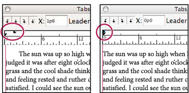
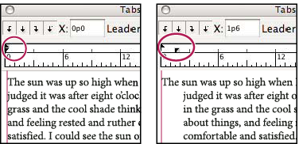

Indent text
Indention is the amount of space between text and the boundary of a type object. Indention affects only the selected paragraph or paragraphs, so you can easily set different indentions for different paragraphs.
You can set indents using the Tabs panel, the Control panel, or the Paragraph panel. When working with area type, you can also control indention using tabs or by changing the inset spacing for the type object.
 When working with Japanese type, you can use the
mojikumi setting instead of the Paragraph panel to specify the indent
for the first line. If you specify the indent for the first line
in the Paragraph panel, and specify mojikumi settings for the first
line indent, the text is placed inside the total of both indents.
When working with Japanese type, you can use the
mojikumi setting instead of the Paragraph panel to specify the indent
for the first line. If you specify the indent for the first line
in the Paragraph panel, and specify mojikumi settings for the first
line indent, the text is placed inside the total of both indents. Set indents using the Paragraph panel
Set indents using the Paragraph panel
- Using the Type tool
 , click
in the paragraph you want to indent.
, click
in the paragraph you want to indent. - Adjust the appropriate indent values in the Paragraph
panel. For example, do the following:
-
To indent the entire paragraph one pica, type a value (such as 1p) in the Left Indent box .
-
To indent only the first line of a paragraph one pica, type a value (such as 1p) in the First Line Left Indent box .
-
To create a hanging indent of one pica, type a positive value (such as 1p) in the Left Indent box and type a negative value (such as ‑1p) in the First Line Left Indent box.
-
Set an indent using the Tabs panel
- Using the Type tool , click
in the paragraph you want to indent.
- Do one of the following to the indent markers in
the Tabs panel:
-
Drag the top marker to indent the first line of text. Drag the bottom marker to move both markers and indent the entire paragraph.

First-line indent (left) and no indent (right)
-
Select the top marker and type a value for X to indent the first line of text. Select the bottom marker and type a value for X to move both markers and indent the entire paragraph.
-
Create a hanging indent
In a hanging indent, all the lines in a paragraph are indented except for the first line. Hanging indents are especially useful when you want to add inline graphics at the beginning of the paragraph, or when you want to create a bulleted list.

- Using the Type tool , click
in the paragraph you want to indent.
- In the Control panel or the Tabs panel, specify a left indent value greater than zero.
- To specify a negative first-line left indent value, do
one of the following:
-
In the Control panel, type a negative value for the first-line left indent .
-
In the Tabs panel, drag the top marker to the left, or select the marker and type a negative value for X.
-
In most cases you’ll specify the negative equivalent of the value you entered in step 2; for instance, if you specified a left indent of 2 picas, your first-line left indent will typically be –2 picas.